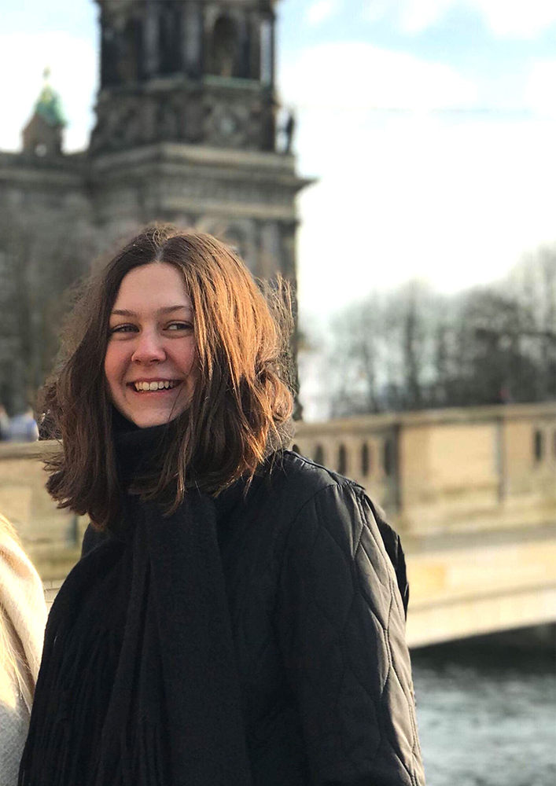

Mit navn er Emma Schandorf Uldall-Jessen.
Jeg er 22 år gammel og er studerende på Erhvevsakademi Aarhus som Multimediedesigner.
Jeg er en kreativ grafiknørd som elsker at beskæftige mig i designerfaget både på studie og hjemme. Ved siden af studie er jeg tjener på en restaurant i Silkeborg, hvor jeg også bor.
Jeg har altid været glad for det kreative miljø, samt det tekniske. Hvis jeg har inspiration ved foreksempel rejse, så elsker jeg at tegne eller tage billeder af lokationerne som jeg har besøgt. Jeg blev interesseret i uddannelsen Multimediedesigner ved et tilfælde. Jeg fandt den tilfældig på eaaa hjemmeside og ved det valgte jeg at søge ind, da den er både teknisk og kreativ.
